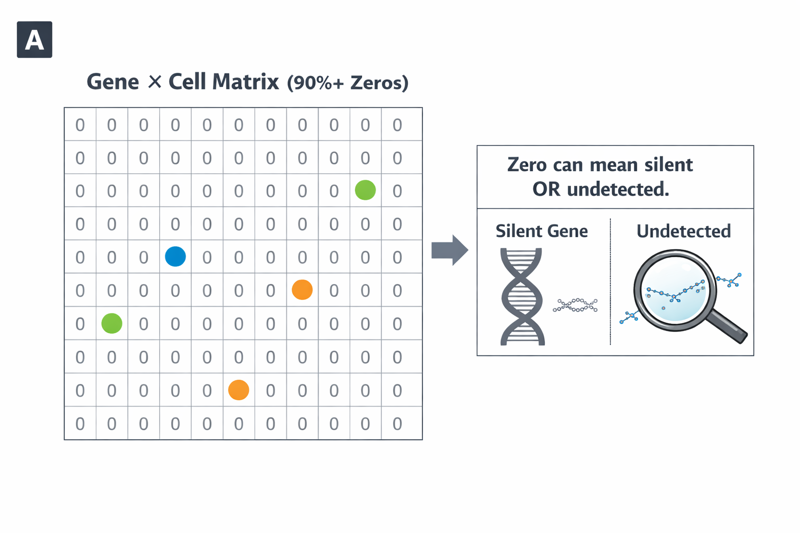
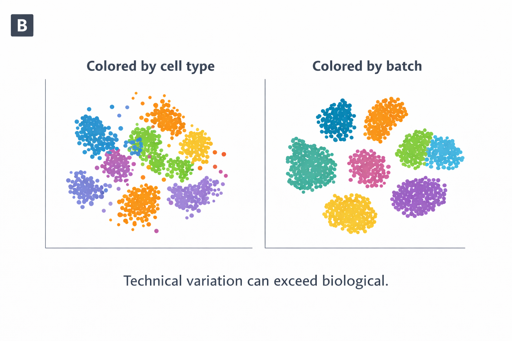
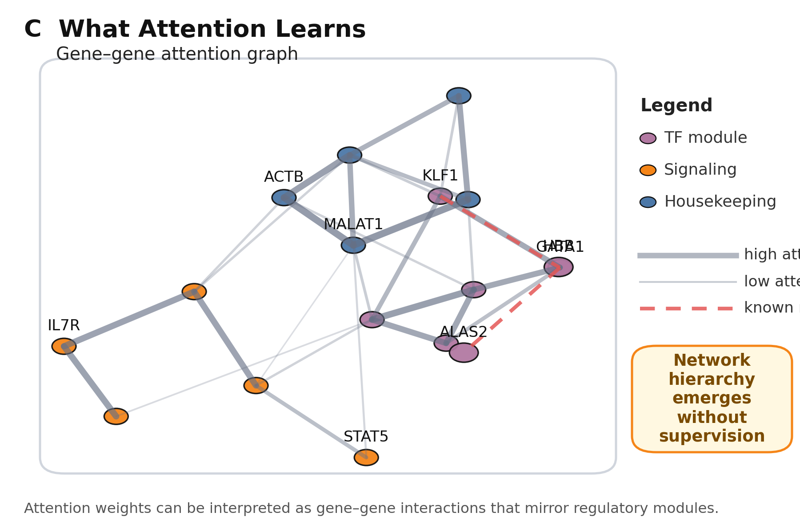
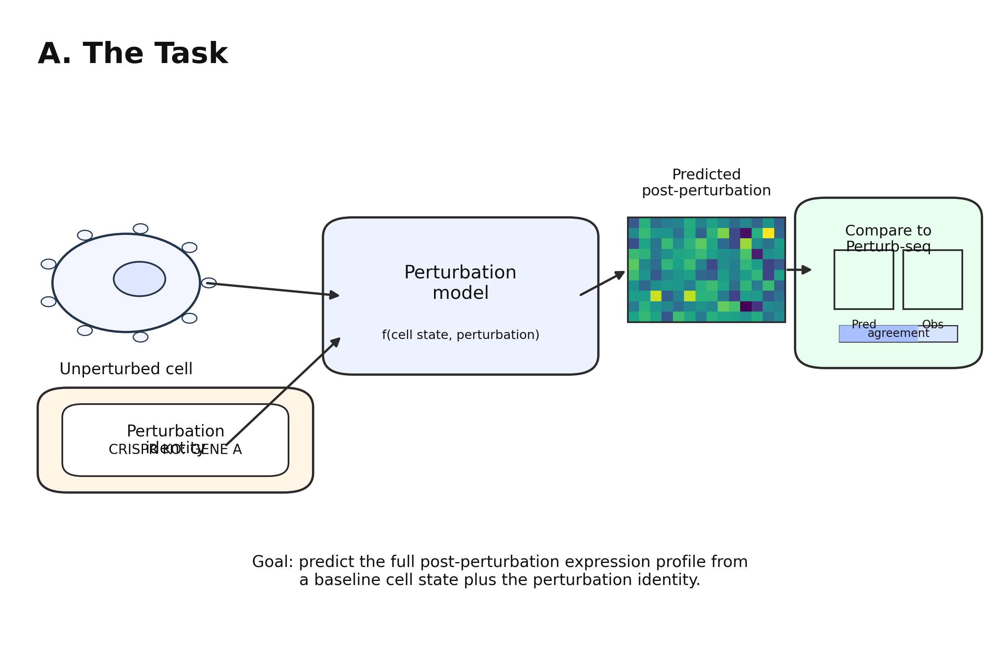
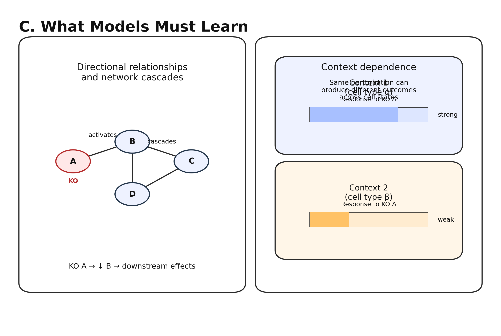
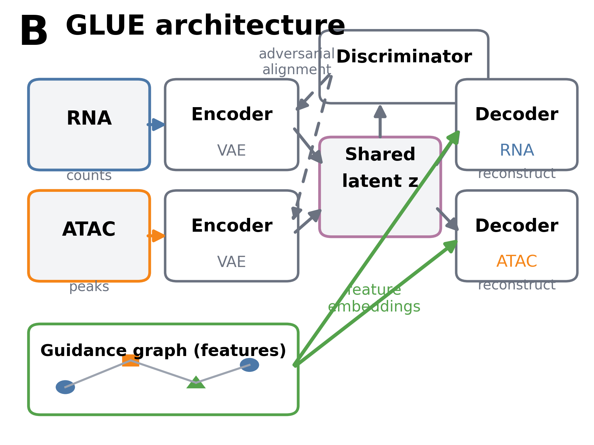

19 Single-Cell Models
The foundation models in Part III operate on sequence: DNA nucleotides, amino acids, RNA bases. They learn what the genome encodes, what proteins it produces, how regulatory elements respond to transcription factors. Yet sequence alone cannot explain why a neuron and a hepatocyte, carrying identical genomes, perform utterly different functions. The answer lies not in sequence but in state: which genes are active, which regulatory elements are accessible, which epigenetic marks are present. A neuron expresses synaptic genes and silences metabolic pathways; a hepatocyte does the reverse. The genome is the same; the cellular interpretation differs. Capturing this interpretation at single-cell resolution has become possible only in the past decade, and the resulting data now approach the scale that enabled language models in text.
Single-cell technologies decompose cellular mixtures that bulk assays average over. A tumor biopsy contains malignant cells, immune infiltrates, stromal fibroblasts, and endothelial cells in varying proportions. Bulk RNA sequencing (RNA-seq) reports average expression across this mixture, potentially masking the drug-resistant subpopulation that will cause relapse. Single-cell RNA-seq profiles each cell individually, revealing which cells express which genes and how composition shifts during disease progression. The challenge is that single-cell data are sparse, with most genes showing zero counts in most cells; noisy, as technical dropout obscures biological signal; and high-dimensional, spanning tens of thousands of features across millions of cells. Traditional analysis methods struggle with this combination; foundation models offer a path through.
Cellular language models treat gene expression profiles as documents and learn the grammar of which genes co-occur in different cellular contexts. Epigenomic models capture regulatory state encoded in DNA methylation and chromatin accessibility. Integration methods align cells across modalities when different assays are performed on different cells from the same tissue. Throughout, the central question remains: can models trained on cellular state representations learn regulatory logic that generalizes across tissues, conditions, and species? The answer determines whether single-cell foundation models can achieve the transfer learning successes that protein and DNA models have demonstrated (see Chapter 9).
19.1 Single-Cell Data Landscape
Understanding single-cell foundation models requires understanding the data they learn from. Single-cell technologies produce measurements fundamentally different from bulk assays: sparse, noisy, and high-dimensional, yet rich with information about cellular heterogeneity that bulk measurements obscure. The transition from bulk to single-cell resolution created new analytical challenges and new opportunities, while technical artifacts impose constraints that shape how foundation models must be designed.
19.1.1 From Bulk to Single-Cell Resolution
Traditional transcriptomic studies measure gene expression in bulk tissue, producing a single measurement per gene that represents the average across thousands to millions of cells. This averaging is both a strength and a limitation. It provides robust, reproducible measurements that have powered decades of biological discovery. It also fundamentally limits what questions can be asked. If a gene appears moderately expressed in bulk, is it uniformly expressed across all cells, or highly expressed in a rare subpopulation while silent elsewhere? Bulk data cannot distinguish these scenarios.
Single-cell RNA sequencing (scRNA-seq) resolves this ambiguity by measuring gene expression in individual cells. The technology has evolved rapidly since its introduction in 2009 [Citation Needed]. Early methods captured hundreds of cells per experiment; current platforms routinely profile hundreds of thousands of cells, with some studies exceeding a million [Citation Needed]. Public repositories now contain tens of millions of single-cell transcriptomes spanning diverse tissues, developmental stages, disease states, and species. This scale approaches the data volumes that enabled large language models in natural language processing.
The analogy between cells and documents runs deeper than dataset size. In language, words combine according to grammatical rules to form sentences that convey meaning. In cells, genes combine according to regulatory programs to form expression profiles that define cellular identity. A hepatocyte expresses genes for drug metabolism, albumin synthesis, and bile production; a neuron expresses genes for synaptic transmission, ion channels, and neurotransmitter receptors. These expression programs are not random: transcription factors activate coherent sets of target genes, signaling pathways coordinate cellular responses, and developmental programs establish cell type identities through cascades of regulatory events. Just as language models learn syntax and semantics by predicting masked words (see Chapter 8), single-cell foundation models might learn regulatory logic by predicting masked genes.


19.1.2 Technical Challenges and Data Characteristics
Single-cell data present distinctive challenges that shape how foundation models must be designed. Dropout is pervasive: due to inefficiencies in RNA capture and amplification, many genes that are actually expressed in a cell register as zero in the measurement. A gene with true expression may appear as zero in 50% to 90% of cells where it is actually transcribed [Citation Needed]. This zero-inflation means that absence of signal is not absence of expression.
Sparsity compounds the interpretation challenge. A typical single-cell transcriptome measures 20,000 genes, but any individual cell might have detectable expression for only 1,000 to 5,000 of them. The resulting data matrices are more than 90% zeros, requiring specialized computational approaches.
Batch effects arise because technical variation between experiments often exceeds biological variation within them. Cells processed on different days, by different operators, or with different reagent lots may cluster by batch rather than by biological type. A model that learns batch-specific patterns rather than biological ones will fail to generalize. This challenge parallels the confounding issues examined in Chapter 12, where technical artifacts can masquerade as biological signal.
Dynamic range spans orders of magnitude, from highly expressed housekeeping genes to rare transcription factors present at a few copies per cell. Normalizing across this range while preserving biologically meaningful variation requires careful preprocessing choices that can affect downstream results.




Despite these challenges, the scale of available data creates opportunities. Tens of millions of cells, spanning hundreds of cell types across dozens of tissues and multiple species, provide training corpora large enough to learn general representations. The question is whether foundation model architectures can extract biological signal from noisy, sparse, high-dimensional measurements.
19.2 Cellular Language Models
The analogy between gene expression and language has proven remarkably productive. If cells are sentences and genes are words, then cellular regulatory programs are grammar: the rules governing which genes appear together in which contexts. Several foundation models now operationalize this analogy, treating single-cell transcriptomes as documents and learning to predict masked genes from expression context. These models differ in their tokenization strategies, pretraining objectives, and architectural choices, but share a common premise: that self-supervised learning on millions of cells can capture regulatory logic that transfers to diverse downstream tasks.
19.2.1 Geneformer: Learning Network Biology
Geneformer exemplifies the cellular language model approach, treating each cell as a sentence where genes serve as tokens (Theodoris et al. 2023). The model was pretrained on approximately 30 million single-cell transcriptomes to learn context-aware representations that capture how genes function within cellular regulatory networks. The key insight was that during pretraining, the model gained understanding of network dynamics in a completely self-supervised manner, encoding network hierarchy in its attention weights without explicit supervision on network structure.
Rather than using raw expression counts, Geneformer employs rank-based encoding that emphasizes relative expression. For each cell, genes are ranked by their expression level compared to their typical expression across the training corpus. This transformation highlights which genes are unusually active or silent in each cellular context. A gene ranked highly in a given cell is one whose expression deviates from its baseline, potentially indicating context-specific regulatory activation. The representation discards absolute counts, which vary with sequencing depth and capture efficiency, while preserving the relative ordering that reflects cellular state. This tokenization strategy differs fundamentally from the nucleotide-level approaches used in DNA language models (see Chapter 5).
Pretraining uses a masked gene prediction objective analogous to BERT-style language modeling (see Chapter 8). A fraction of genes are masked in each cell, and the model learns to predict which genes were masked based on the remaining expression context. This forces the model to learn co-expression patterns: which genes tend to appear together at high ranks in the same cells, and which genes predict each other’s presence. The objective implicitly captures regulatory modules, signaling pathways, and cell-type-specific programs.
After pretraining, Geneformer supports diverse downstream applications through fine-tuning or feature extraction. Cell type annotation achieves high accuracy even with limited labeled examples, leveraging general biological knowledge acquired during pretraining. The model identified candidate therapeutic targets for cardiomyopathy by analyzing how disease-associated genes fit within learned network structure, demonstrating potential for accelerating discovery in rare diseases where large disease-specific datasets are unavailable (Theodoris et al. 2023).




19.2.2 scGPT: Generative Pretraining for Single-Cell Analysis
scGPT extends the foundation model paradigm with a generative architecture trained on over 33 million cells (Cui et al. 2024). The model functions as a generalist backbone for single-cell analysis pipelines, supporting applications from cell type annotation to perturbation response prediction within a unified framework.
The architecture incorporates several innovations tailored to single-cell data characteristics. Gene tokens combine learnable embeddings with position encodings that can capture genomic location when relevant. Expression values are discretized into bins to handle the wide dynamic range and zero-inflation characteristic of single-cell measurements; rather than predicting continuous values, the model predicts which expression bin a gene falls into. Special tokens mark cell boundaries and indicate modality when multi-omic data are available.
scGPT uses multiple pretraining objectives simultaneously. Masked gene prediction encourages learning of co-expression patterns, similar to Geneformer. Autoregressive generation predicts expression of one set of genes conditioned on others, enabling the model to generate synthetic expression profiles or impute missing values. Contrastive objectives push cells from the same type to cluster in embedding space while separating different types, providing discriminative signal that complements the generative objectives. This combination of pretraining objectives parallels the hybrid strategies explored in DNA and protein language models (see Chapter 8).
The combination of objectives enables scGPT to excel across multiple applications. Cell type annotation benefits from rich pretrained representations, including identification of fine-grained subtypes that might be missed by simpler methods. Multi-batch integration aligns cells from different experiments while preserving genuine biological variation, addressing the pervasive batch effect problem. Perturbation response prediction anticipates how cells will respond to genetic knockouts or drug treatments, providing a foundation for in silico experimentation.
19.2.3 scFoundation and Scaling Single-Cell Models
scFoundation pushes the scale of single-cell foundation models further, training on over 50 million cells with an architecture designed for both representation learning and generation (Hao et al. 2024). The model explores how scaling laws observed in language models translate to cellular data, finding that larger models trained on more diverse data produce embeddings that transfer better across tasks and contexts. This scaling behavior mirrors patterns observed in DNA language models (see Chapter 13).
The pretraining corpus spans diverse tissues, developmental stages, and disease states, including both human and mouse data. This diversity proves essential: models trained on narrow datasets (a single tissue or condition) learn representations that capture that specific context but fail to generalize. Models trained on diverse corpora learn more abstract representations of cellular state that transfer across biological contexts.
scFoundation emphasizes the importance of tokenization and normalization choices for downstream performance. The model systematically compared different approaches to handling zero-inflation, normalization across sequencing depth, and gene vocabulary selection. These preprocessing decisions, often treated as implementation details, significantly affect what biological signals the model can capture. The parallels to tokenization debates in DNA language models (see Chapter 5) are striking: representation choices made before training constrain what patterns can be learned.
19.2.4 TranscriptFormer: Cross-Species Cellular Models
TranscriptFormer extends single-cell foundation models across evolutionary time, training on over 112 million cells spanning 1.5 billion years of evolution across 12 species (Pearce et al. 2025). This cross-species approach tests whether regulatory principles learned from one organism generalize to others.
The model uses a novel autoregressive architecture that jointly predicts genes and their expression levels. Rather than treating gene identity and expression as separate prediction problems, TranscriptFormer generates them together, enabling it to produce synthetic cells conditioned on prompts specifying species, tissue, or cell type. Because the vocabulary spans multiple species with ortholog mappings, the model can transfer cell type annotations across evolutionary distances.
In zero-shot settings, TranscriptFormer demonstrates strong performance on both in-distribution and out-of-distribution cell type classification. Remarkably, models trained predominantly on mouse and human data can annotate cell types in zebrafish and other species separated by hundreds of millions of years of evolution. This cross-species transfer reveals that core principles of cellular regulation are deeply conserved, and that foundation models can capture these conserved principles when trained on evolutionarily diverse data. The success of cross-species transfer in cellular models parallels similar findings in protein language models, where evolutionary conservation provides a powerful inductive bias (see Chapter 15).
19.3 Perturbation Response Prediction
The ultimate test of whether cellular foundation models understand regulatory biology is prediction: can they anticipate how cells will respond to interventions they have never seen? Perturbation prediction moves beyond pattern recognition toward mechanistic understanding. If a model has learned the causal structure of gene regulatory networks, it should predict the downstream consequences of knocking out a transcription factor or activating a signaling pathway. This capability would transform drug discovery and target identification (Chapter 29), enabling in silico screening of perturbations before expensive wet-lab validation. The design-build-test-learn cycles that could exploit such predictions are examined in ?sec-ch28-dbtl. Achieving this capability requires models to distinguish causation from correlation in observational data.
19.3.1 In Silico Experiment Promise
One of the most compelling applications of cellular foundation models is predicting how cells will respond to perturbations. If a model has learned regulatory logic from expression data, it should be able to anticipate the transcriptional consequences of knocking out a gene, activating a pathway, or treating with a drug. Such predictions could accelerate drug discovery by prioritizing candidates before expensive wet-lab validation, identify synthetic lethal interactions for cancer therapy, and suggest targets for diseases without known interventions.
The perturbation prediction task requires more than memorizing co-expression patterns. The model must understand directional relationships: if gene A activates gene B, then knocking out A should reduce B’s expression. It must capture network effects: perturbations propagate through regulatory cascades, producing secondary and tertiary effects beyond direct targets. It must recognize context dependence: the same perturbation may have different effects in different cell types or states.
19.3.2 Perturb-seq and Foundation Model Training
Perturb-seq combines CRISPR-based genetic perturbations with single-cell RNA sequencing, measuring the transcriptional consequences of gene knockouts across thousands of cells (Dixit et al. 2016). These functional screens complement the deep mutational scanning approaches covered in Section 2.4.4, providing cellular rather than molecular readouts of perturbation effects. These datasets provide supervised signal for perturbation prediction: given the pre-perturbation state and the identity of the perturbed gene, predict the post-perturbation expression profile.
Foundation models approach this task through transfer learning (see Chapter 9). A model pretrained on tens of millions of unperturbed cells learns general representations of cellular state and gene-gene relationships. Fine-tuning on Perturb-seq data teaches the model to map these representations to perturbation outcomes. The hope is that general biological knowledge from pretraining will enable accurate predictions for perturbations not seen during fine-tuning, including knockouts of genes never directly perturbed in training data.
scGPT and Geneformer both demonstrate perturbation prediction capabilities, though performance varies across perturbation types and cellular contexts. Predictions are most accurate for well-characterized genes with many training examples and clear regulatory relationships. Performance degrades for poorly characterized genes, complex combinatorial perturbations, and cell types underrepresented in training data.




19.3.3 Limitations of Current Approaches
Despite promising results, current perturbation prediction models face fundamental limitations. Most training data come from immortalized cell lines that may not reflect primary tissue biology. Perturbations are typically single-gene knockouts; combinatorial perturbations involving multiple genes remain challenging. The models predict average responses across perturbed cells rather than the heterogeneity of individual responses.
More fundamentally, correlation-based learning from expression data cannot reliably distinguish correlation from causation. A gene that is always co-expressed with another may be co-regulated rather than directly regulating. Training on observational data (unperturbed cells) and interventional data (perturbed cells) provides complementary signals, but even Perturb-seq data have limited coverage of the regulatory network. Foundation models capture patterns in data; whether those patterns reflect causal regulatory relationships remains an empirical question that requires experimental validation.
19.4 Epigenomic Foundation Models
Gene expression profiles capture one layer of cellular state, but the regulatory machinery determining which genes can be expressed operates through epigenomic modifications. DNA methylation silences genes by blocking transcription factor binding; chromatin accessibility determines which regulatory elements are available for activation. These epigenomic layers sit upstream of expression, establishing the potential for transcription before any RNA is produced. Foundation models that learn from epigenomic data capture this regulatory potential, complementing expression-based models with a mechanistic view of how cellular identity is encoded and maintained.
19.4.1 DNA Methylation and CpGPT
DNA methylation occupies a privileged position in the regulatory hierarchy, sitting at a junction between genotype, environment, and phenotype. Methylation patterns integrate genetic influences, since sequence context affects which CpG sites can be methylated and polymorphisms can create or destroy CpG dinucleotides. They also integrate developmental programs, since methylation landscapes are extensively remodeled during differentiation and establish cell-type-specific regulatory states. Environmental exposures including diet, smoking, and stress leave lasting methylation signatures that persist long after the exposure ends [Citation Needed].
Beyond serving as an integrative readout, methylation encodes rich information about cellular identity and state. Epigenetic clocks built from methylation data predict chronological age with striking accuracy, and deviations from predicted age (epigenetic age acceleration) correlate with mortality risk and disease burden [Citation Needed]. Cell types can be distinguished by their methylation profiles, and disease states often manifest as characteristic methylation changes.
CpGPT (Cytosine-phosphate-Guanine Pretrained Transformer) treats methylation as a sequence-like object amenable to transformer-based pretraining (Camillo et al. 2024). The model was pretrained on over 1,500 DNA methylation datasets encompassing more than 100,000 samples from diverse tissues and conditions. Each sample is tokenized as a sequence of CpG sites with their methylation values (beta values ranging from 0 to 1) and genomic positions. The model learns to predict masked methylation values from surrounding context, capturing both local correlations between neighboring CpG sites and global patterns that distinguish different tissues or conditions.
After pretraining, CpGPT supports several capabilities with minimal additional supervision. The model can impute methylation levels at CpG sites not directly measured on a given array platform, effectively enabling conversion between different array technologies such as EPIC and 450K. For biological age prediction, fine-tuned CpGPT models match or exceed purpose-built epigenetic clocks while using a more general architecture. The learned embeddings cluster by tissue type without explicit supervision during pretraining, suggesting that the model captures biologically meaningful variation. For disease-associated methylation patterns, CpGPT can be adapted to distinguish cases from controls across multiple disease contexts through transfer learning.
19.4.2 Chromatin Accessibility Models
Chromatin accessibility, measured by assay for transposase-accessible chromatin sequencing (ATAC-seq) and related assays, provides a complementary view of regulatory state. Accessible chromatin regions mark active regulatory elements: promoters, enhancers, and insulators where transcription factors can bind. The accessibility landscape varies across cell types and conditions, reflecting the regulatory programs that define cellular identity.
Foundation models for chromatin accessibility face the challenge of representing accessibility peaks, which are genomic intervals of variable width rather than single values at fixed positions. Different approaches tokenize this data differently: some treat peaks as binary features (accessible or not), others use continuous accessibility scores, and some operate directly on the underlying sequence to predict accessibility.
Models that predict chromatin accessibility from DNA sequence, such as those built on Enformer-style architectures (see Chapter 16), learn how sequence motifs and their arrangements determine accessibility. These models complement single-cell accessibility measurements by providing a mechanistic link between genotype and epigenetic state. Variants that alter predicted accessibility become candidates for regulatory function even when they fall outside coding regions.
Single-cell ATAC-seq (scATAC-seq) provides cell-type-resolved accessibility profiles, revealing which regulatory elements are active in which cells. Foundation models for scATAC-seq face similar challenges to scRNA-seq models (sparsity, dropout, batch effects) with the additional complexity that the feature space (accessibility peaks) varies across datasets depending on peak calling procedures. Models that operate on fixed genomic coordinates can integrate across datasets more readily than those that rely on dataset-specific peak sets.
19.5 Cross-Modality Integration
Single-cell technologies have expanded beyond transcriptomics to profile chromatin accessibility, DNA methylation, protein levels, and spatial position. Each modality captures a different aspect of cellular state: expression reflects current activity, accessibility reflects regulatory potential, methylation reflects developmental history. Integrating these perspectives into unified representations requires solving a fundamental challenge: aligning cells profiled with different assays when the feature spaces share no direct correspondence. Foundation model approaches to this integration problem combine learned embeddings with biological prior knowledge, producing unified atlases that leverage all available modalities. These integration challenges anticipate the broader multi-omics approaches examined in Chapter 22, where the principles of intermediate fusion and shared latent spaces extend beyond single-cell to patient-level integration of genomics, transcriptomics, proteomics, and clinical data.
19.5.1 Unpaired Integration Challenge
Single-cell experiments often profile different modalities in different cells. A study might include scRNA-seq data from one set of cells, scATAC-seq data from another set, and perhaps a small subset with both modalities measured simultaneously through multiome protocols. Integrating these data into a unified atlas requires aligning cells across modalities when the feature spaces are entirely different.
This problem is harder than standard batch correction because there is no direct correspondence between features. RNA-seq measures expression across roughly 20,000 genes. ATAC-seq measures accessibility across hundreds of thousands of peaks. A gene is not the same object as a peak. Simple approaches assign peaks to nearby genes and use gene-level summaries for alignment, but this conversion loses information about the detailed structure of accessibility within regulatory regions and introduces arbitrary choices about assignment rules.
19.5.2 GLUE: Graph-Linked Unified Embedding
GLUE (Graph-Linked Unified Embedding) addresses unpaired integration by combining modality-specific encoders with a graph of biological prior knowledge linking features across omics (Cao and Gao 2022). Rather than converting features between modalities, GLUE explicitly encodes regulatory relationships into a guidance graph and learns cell embeddings that are consistent with this graph.
The architecture has three key components. Modality-specific variational autoencoders provide encoders that map cells to a shared low-dimensional latent space and decoders that reconstruct modality-specific features. Generative distributions are tailored to each modality: negative binomial for count data, appropriate alternatives for accessibility.
The feature graph encodes biological prior knowledge about relationships between features across modalities. Nodes represent genes, peaks, and other genomic features. Edges connect ATAC peaks to genes they might regulate based on genomic proximity or chromatin conformation data. Edges connect genes to transcription factors that bind their promoters. This graph is provided as input rather than learned, allowing incorporation of external knowledge from databases and literature.
A graph variational autoencoder learns feature embeddings from the guidance graph. These embeddings are used in the decoders, tying different modalities to a common regulatory backbone. Biologically related features (a gene and its putative enhancer) have similar representations, helping align the latent spaces.




Adversarial alignment ensures that cell embeddings from different modalities are truly integrated. A discriminator tries to distinguish which modality produced each embedding, and encoders are trained to fool the discriminator. This forces the encoders to produce modality-invariant embeddings where cells from different assays occupy a shared manifold reflecting biological rather than technical variation.
19.5.3 Applications of Cross-Modal Integration
GLUE enables several applications beyond basic integration. Triple-omics integration combines gene expression, chromatin accessibility, and DNA methylation measured in different cells, producing unified cell type annotations that leverage all data types. Regulatory inference uses learned feature embeddings to identify candidate enhancer-gene links, providing a principled alternative to simple distance-based assignment.
Cross-modal prediction becomes possible once cells are aligned. The model can predict chromatin accessibility from expression or vice versa, enabling imputation of missing modalities. If a new dataset contains only scRNA-seq, the integrated model can predict which accessibility peaks would likely be active in each cell type based on expression patterns.
SCGLUE extends the framework with optimizations for single-cell scale and sparsity (Cao and Gao 2022). The adversarial alignment handles batch effects common in single-cell experiments, and the graph structure incorporates tissue-specific regulatory relationships. The model scales to millions of cells while maintaining biological grounding from the guidance graph.
The success of graph-guided integration demonstrates that biological prior knowledge can regularize learning and improve alignment. The feature graph constrains what the model learns, ensuring consistency with known regulatory relationships while allowing discovery of new patterns. This combination of learned representations with structured biological knowledge provides a template for integrating foundation model embeddings with domain expertise (see Chapter 21 for further discussion of graph-based approaches).
19.6 Practical Challenges and Limitations
The promise of single-cell foundation models comes with significant caveats. Evaluation remains difficult when ground truth is uncertain, training corpora reflect biases in what tissues and populations have been studied, and the distinction between learning biology and memorizing artifacts is not always clear. These challenges do not invalidate the approach, but they constrain what claims can be made and what applications are appropriate. Understanding these limitations is essential for responsible deployment of single-cell foundation models in research and clinical settings.
19.6.1 Batch Effects and Technical Artifacts
Batch effects remain the dominant challenge in single-cell analysis. Technical variation between experiments, protocols, and platforms can exceed biological variation, causing cells to cluster by batch rather than by type. Foundation models pretrained on diverse data may be more robust to batch effects than models trained on narrow datasets, but robustness is not guaranteed.
The problem is particularly acute when applying pretrained models to new data from platforms or protocols not represented in pretraining. A model trained predominantly on 10x Genomics data may perform poorly on Smart-seq2 data, not because of biological differences but because of systematic technical differences in capture efficiency, amplification bias, and gene detection. Evaluation must carefully distinguish genuine biological generalization from memorization of technical signatures. These evaluation challenges parallel the broader methodological concerns discussed in Chapter 12, while specific strategies for detecting and mitigating batch-driven confounding appear in Section 22.7.1.
19.6.2 Cell Type Imbalance
Training corpora overrepresent common cell types while rare populations are poorly captured. Immune cells, particularly from blood, dominate many datasets. Rare cell types that may be disease-relevant, such as specific neuronal subtypes or tissue-resident stem cells, appear infrequently. Models may excel at distinguishing well-represented types while struggling with rare or novel populations.
This imbalance has equity implications when certain tissues or conditions are systematically undersampled. Neurological and psychiatric diseases involve cell types less represented in current atlases than blood or epithelial cells. Diseases affecting underrepresented populations may be modeled less accurately if training data come predominantly from European ancestry cohorts. These equity concerns mirror the population stratification issues examined in Chapter 12.
19.6.3 Evaluation Complexity
Evaluating single-cell foundation models is complicated by uncertain ground truth. Cell type labels in training data reflect current annotations that may be incomplete or inconsistent. Different studies use different annotation schemes, different levels of granularity, and different evidence standards. Performance metrics conflate model quality with annotation quality.
Perturbation predictions face similar challenges. The “correct” transcriptional response to a perturbation depends on cell type, context, and measurement technology. Even well-characterized perturbations produce variable responses across replicates. Evaluation protocols must acknowledge these uncertainties rather than treating benchmarks as definitive ground truth. The broader principles of rigorous evaluation methodology from Chapter 12 apply here, while benchmark construction considerations specific to cellular models are addressed in Section 11.5. Single-cell data introduce domain-specific complications that require careful attention to leakage and distribution shift.
19.6.4 Causality and Mechanism
The most fundamental limitation is that correlation-based learning cannot establish causation. Foundation models learn patterns of co-occurrence: which genes appear together, which accessibility peaks associate with which expression changes. These patterns may reflect regulatory relationships, but they may also reflect confounding factors, indirect associations, or artifacts of data processing.
The perturbation prediction task illustrates this limitation. A model that accurately predicts perturbation outcomes for well-characterized genes may be learning genuine regulatory logic, or it may be exploiting superficial correlations that happen to work for genes with abundant training data. Distinguishing these possibilities requires experimental validation and careful analysis of model behavior on held-out perturbations.
19.7 From Sequence to State
Single-cell and epigenomic foundation models learn what states cells occupy, complementing the sequence-based models that learn what sequences encode. DNA and protein language models capture the information content of genomic and protein sequence (see Chapter 14, Chapter 15); cellular models capture the configurations that cells assume in development, homeostasis, and disease. These perspectives address different biological questions: sequence determines the possible states a cell can achieve, while cellular state reflects which possibilities are realized in a given context. A complete understanding of gene regulation requires both.
The representations learned by cellular foundation models enable integration across scales and modalities. Cell embeddings serve as node features in graph-based reasoning systems (Chapter 21), connecting expression profiles to protein interaction networks and regulatory pathways. Three-dimensional genome organization (Chapter 20) provides spatial context that constrains which regulatory relationships can operate. Multi-omics integration (Chapter 22) extends beyond expression to proteomics, epigenomics, and clinical measurements. In each case, foundation model embeddings provide the representational substrate that downstream methods refine.
The ultimate goal extends beyond prediction to explanation: models that identify the regulatory mechanisms underlying cellular state, the variants that perturb those mechanisms, and the interventions that might restore normal function. Current foundation models capture patterns in cellular data with high fidelity, enabling accurate cell type classification, perturbation response prediction, and cross-dataset integration. Whether those patterns reflect the causal structure of biological regulation, or merely correlations useful for prediction, remains open. Resolving this question requires continued integration of computational modeling with experimental validation, connecting the patterns that models learn to the mechanisms that biology employs.